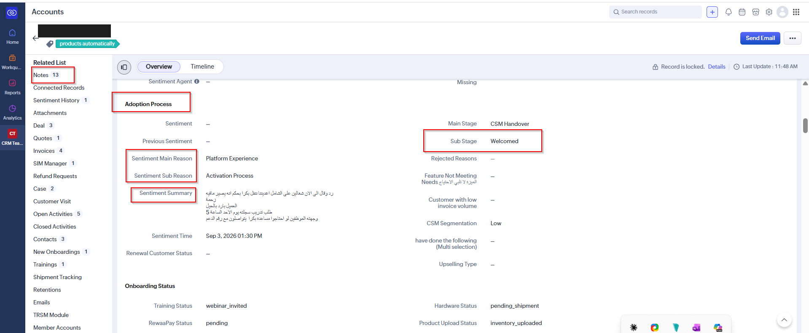
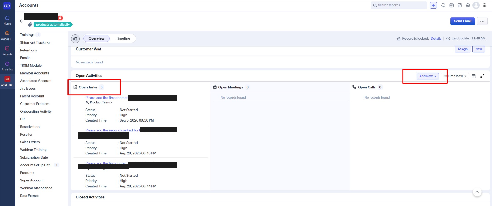

الركيزة الثالثة في الالتزام التشغيلي هي التوثيق — أي تواصل مع العميل غير موثّق في الـ CRM يُعتبر كأنه لم يحدث، فالتوثيق هو ما يحفظ سياق العميل ويُبنى عليه كل قرار لاحق سواء منك أو من أي زميل آخر يتعامل مع الحساب.
📝 توثيق ملخص التواصل (Sentiment Summary)
كل مكالمة أو محادثة مع العميل يجب أن تُترجم إلى ملخص واضح في حساب العميل على الـ CRM — لأن هذا الملخص هو الذي يمكّن أي شخص من فهم وضع العميل دون الحاجة للرجوع إليك شخصيًا.
في حقل Sentiment Summary يُضاف ملخص تام لما حدث في المكالمة أو المحادثة وما تم الاتفاق عليه مع العميل، مع إرفاق الروابط المناسبة (رابط المحادثة أو رابط التصعيد إن وجد) — على أن يكون الملخص واضحًا ومعبّرًا ودون تكرار.

🔖 اختيار Sentiment Main / Sub Reason
اختيار السبب الرئيسي والفرعي بدقة يحدد نوع المتابعة المطلوبة، ويسمح لاحقًا بتحليل أسباب رضا أو تذمر العملاء على مستوى الفريق ككل.
Platform Experience - تجربة المنصة
• Feature relevance and availability - مدى ملاءمة وتوفر الميزات
• Platform speed and reliability - سرعة وثبات المنصة
• Ease of use and user experience - سهولة الاستخدام وتجربة المستخدم
• Unexpected behaviour - مشكلة بالمنصة
• Platform speed and reliability - سرعة وثبات المنصة
• Ease of use and user experience - سهولة الاستخدام وتجربة المستخدم
• Unexpected behaviour - مشكلة بالمنصة
Hardware - الأجهزة
• Hardware performance and quality - أداء وجودة الأجهزة
• Hardware delivery and fulfillment - توصيل وتنفيذ طلبات الأجهزة
• Hardware delivery and fulfillment - توصيل وتنفيذ طلبات الأجهزة
Data Activation - تفعيل البيانات
• Data upload and activation experience - تجربة رفع وتفعيل البيانات
Training - التدريب
• Training clarity and usefulness - وضوح وفائدة التدريب
• Post-onboarding communication - التواصل بعد التفعيل
• Return on investment clarity - وضوح العائد على الاستثمار
• Customer readiness to continue - جاهزية العميل للاستمرار
• Post-onboarding communication - التواصل بعد التفعيل
• Return on investment clarity - وضوح العائد على الاستثمار
• Customer readiness to continue - جاهزية العميل للاستمرار
Technical Support - الدعم الفني
• Technical support effectiveness - فعالية الدعم الفني
Sales Experience - تجربة المبيعات
• Sales promise vs reality - وعود المبيعات مقابل الواقع
• Pricing fairness and value perception - القيمة المضافة مقابل المبلغ المدفوع
• Pricing fairness and value perception - القيمة المضافة مقابل المبلغ المدفوع
رواء باي - Rewaapay
• Activation Process - الية التفعيل وسلاستها
• Unexpected behaviour - سلوك غير متوقع حصل (عطل كمثال او تعليق)
• Unexpected behaviour - سلوك غير متوقع حصل (عطل كمثال او تعليق)
Business Status - حالة النشاط التجاري
• Business closed or ownership changed - النشاط التجاري مغلق أو تم تغيير المالك
Not Specified - غير محدد
• Reason not shared or unclear - السبب غير مذكور أو غير واضح
Customer is not reachable - لا يمكن الوصول إلى العميل
• Customer is not reachable - لا يمكن التواصل مع العميل
📍 تحديث المرحلة الفرعية (Sub Stage)
مرحلة العميل يجب أن تعكس واقعه الفعلي في كل لحظة — فتحديثها أولًا بأول هو ما يجعل تقارير الفريق ولوحات المتابعة دقيقة وقابلة للاعتماد عليها.
بعد كل تواصل مع العميل، إذا حصل أي تحديث أو تغيّر في وضعه، لازم تُحدَّث Sub Stage فورًا لتعكس المرحلة الصحيحة.
🗺️
دليل مراحل العميل (CSM Stages)
للاطلاع على جميع المراحل والمراحل الفرعية
✅ إضافة Task عند وجود متابعة لاحقة
أي التزام تجاه العميل بموعد أو إجراء لاحق يبقى بلا قيمة إن لم يُذكّرك النظام به — إضافة Task تضمن ألا يضيع أي وعد قُطع للعميل.
إذا تحدد مع العميل موعد لاحق أو أي شيء يستوجب الرجوع إليه، لازم تُضاف Task بنفس اللحظة.

🚨 توثيق التصعيد
التصعيد بدون توثيق يفقد قيمته — فتوثيقه في الحساب يحفظ أثر المشكلة ويسمح بمتابعة حلها من أي طرف معني دون الحاجة لإعادة الشرح من الصفر.
إذا احتاج الأمر تصعيدًا، يُضاف في Notes منشن (Mention) للشخص المعني، مع رابط بوست السلاك الذي تم فيه التصعيد أو رابط المحادثة التي جرى التواصل فيها.